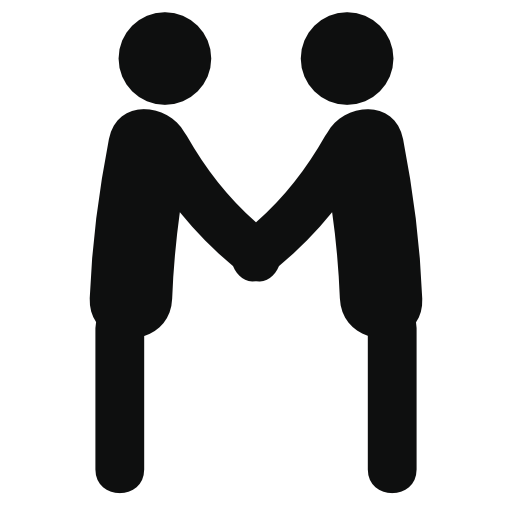

As with many countries and cultures, Pakistan has their own set of etiquettes. These rules are important in leaving a good first impression, no matter the situation.
Social Norms

Greeting others
When someone enters a room, it is most polite to stand up to greet them.

Volume in public
Loud laughter in open public is seen as impolite, this is extended to other forms of loud sounds to a lesser degree.
Regular praise
Offer regular praise to others about how they dress or how they look.
Sitting posture
Spreading your legs while sitting is seen as impolite.

Be prepared for questions regarding your background
It is not uncommon to be asked about where you are from or what you do as a living.
Wear appropriate clothing
This is especially important in special occasions such as hoildays or events. Wearing something that does not match the occasion may make you seem unaware or disrespectful.

Wait for elders to sit down before dinning
When in a meal, you should wait for any elders to seat themselves, before doing so yourself.
Do not use your right hand in meals
It is seen as impolite to pass food or eat with your left hand, use your right hand to eat and the left hand to hold up plates or containers of food.
Citations
“Pakistan Flag, Waving Fabric Texture Graphic by bourjart_20 · Creative Fabrica.” Creative Fabrica, https://www.creativefabrica.com/product/pakistan-flag-waving-fabric-texture/.
Pier. “Pakistani Culture.” Cultural Atlas, Cultural Atlas, https://culturalatlas.sbs.com.au/pakistani-culture/pakistani-culture-core-concepts.
Kugelman, Michael. “Are Pakistanis Patriotic?” DAWN.COM, 7 June 2012, https://www.dawn.com/news/724657/are-pakistanis-patriotic.
May, James R., and Erin Daly. “Human Dignity and Environmental Outcomes in Pakistan.” SSRN, 7 Jan. 2020, https://papers.ssrn.com/sol3/papers.cfm?abstract_id=3504768#:~:text=It%20posits%20that%20Pakistan%20takes,the%20human%20right%20to%20dignity.
Wolfgang Fuchs, Simon. “Religious Minorities in Pakistan: Identities, Citizenship and Social Belonging.” Taylor & Francis, https://www.tandfonline.com/doi/full/10.1080/00856401.2020.1695075#:~:text=According%20to%20the%202017%20Census,and%20other%20minorities%200.07%20percent.
“Computer Icons Greeting , Others Transparent Background PNG Clipart Free Download.” HiClipart, https://www.hiclipart.com/free-transparent-background-png-clipart-mdvwh/download.
“Gray Volume Indicator Icon, Text Brand Logo, Sound Transparent Background PNG Clipart.” HiClipart, https://www.hiclipart.com/free-transparent-background-png-clipart-dmjsh.
Nuthep, Suppachok. “Like, Thumbs up Icon, Black Solid Color, Minimal Design.” IStock, https://www.istockphoto.com/hk/%E5%90%91%E9%87%8F/%E5%B0%B1%E5%83%8F%E8%B1%8E%E8%B5%B7%E5%A4%A7%E6%8B%87%E6%8C%87%E5%9C%96%E7%A4%BA%E9%BB%91%E8%89%B2%E7%B4%94%E8%89%B2%E6%9C%80%E5%B0%8F%E7%9A%84%E8%A8%AD%E8%A8%88-gm1172165319-325042929.
FAVPNG.com. “Silhouette Homo Sapiens Clip Art - PNG - Download Free.” FAVPNG.com, https://favpng.com/png_view/yk-silhouette-homo-sapiens-clip-art-png/jb7Ap0Vd.
FAVPNG.com. “Online Chat Chat Room Web Chat Clip Art - PNG - Download Free.” FAVPNG.com, https://favpng.com/png_view/chatting-cliparts-online-chat-chat-room-web-chat-clip-art-png/yPSQ4DBH.
“Eid Background - Unlimited Download. Cleanpng.com.” Cleanpng.com, https://www.cleanpng.com/png-sleeve-kurta-pakistani-clothing-blouse-eid-kids-2295261/.
“Free Clip Art Right Hand Palm Facing out Clipart - Free to Use ...” Free Clip Art Right Hand Palm Facing Out Clipart - Free to Use ... - ClipArt Best - ClipArt Best, http://www.clipartbest.com/clipart-RTGERRgnc.
Ali, Halima. “20 Delicious Reasons to Visit Pakistan.” CNN, Cable News Network, 15 Oct. 2019, https://edition.cnn.com/travel/article/pakistan-best-food/index.html.
Ali, Halima. “Pakistan: Adventure Travel's Best-Kept Secret?” CNN, Cable News Network, 20 June 2018, https://edition.cnn.com/travel/article/pakistan-adventure-travel/index.html.